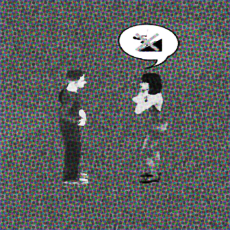
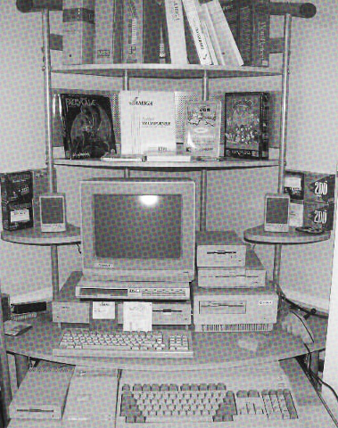

The Real Reason We Play The Sims
SIM ANIMAL OF THE WEEK
OH MAN! What a tough week. My parents just got divorced so now all *I* want to think about is THIS cutie pie that has been voted the "SIMS ANIMAL OF THE WEEK" for the 17th consecutive week! Congratulations little brown and white dog. We are all very proud of you.

Let's take a look at those low poly legs and precious button.. black... sort of, soulless eyes? After seeing this image and having to write a caption for the 17th week in a row I'm kind of realising it's a bit scary. I don't think I can do this again. Can you guys vote for one of the cats this week, maybe? I'll even settle for one of those low poly birds from one of then newer games. Please.
IT'S REALLY NOT THAT SERIOUS
DRAMA ALERT: Things have been heating up this week in the Sims Community!
Discourse has been widespread surrounding how seriously people take their own gameplay, the spectrum ranging from obsessive fans that consider the lives of their sims to be equal to humans, to those that couldn't care less if their computer caught fire and wiped all their saves. Yikes! All I have to say is, it's really not that serious whether it's serious or not. DO NOT BRING ME INTO THIS!!!!
REMEMBER? REMEMBER? REMEMBER? REMEMBER? REMEMBER? REMEMBER? REMEMBER? REMEMBER? REMEMBER?
